视觉移动Solution套件使用手册
1. 功能介绍
基于 D-Robotics RDK X5 平台，面向室内移动机器人场景，提供软硬结合、深度优化、低成本、开箱即用的全栈纯视觉移动参考解决方案，帮助用户建立起移动机器人底层的核心和基础能力，推动智能机器人产品快速落地。支持轮式、四足、双足等不同机器人类型。
针对室内陪伴机器人，移动Solution提供了无感和断点续建的建图能力，使陪伴机器人从开箱时刻起就成为家庭的一员。机器人首次启动就能够立刻和人互动，无需等待，在互动的过程中自动完成建图。同时在家庭复杂环境下能够自主避障和自动脱困，不制造麻烦。得益于Lifelong的SLAM能力，机器人在使用的过程中持续进化，越来越”懂家”，越用越聪明。使移动Solution成为家庭智能服务的隐形守护者。
移动Solution包含双目深度估计、VSLAM（6DoF位姿估计、重定位、Lifelong实时3D建图）、障碍物识别、导航和避障、以及用于开发的工具箱。
极简&低成本硬件：
| 移动底盘 | RDK X5 | 双目相机 | → | 组装后 |
|---|---|---|---|---|
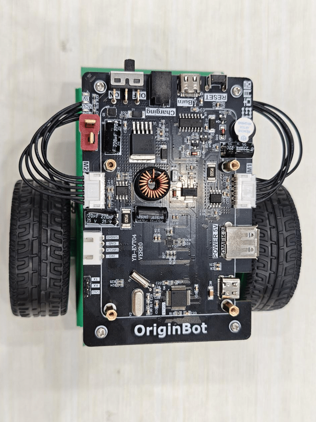 |
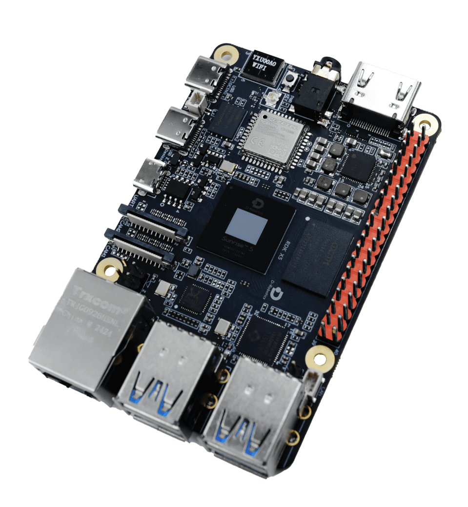 |
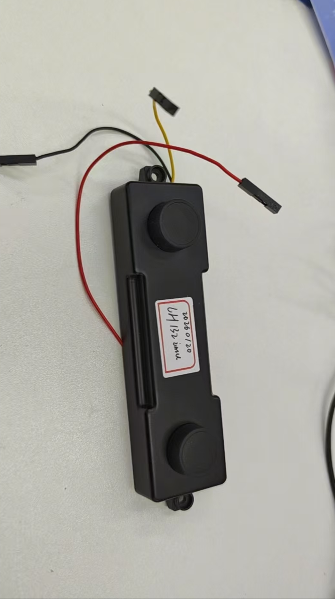 |
→ | 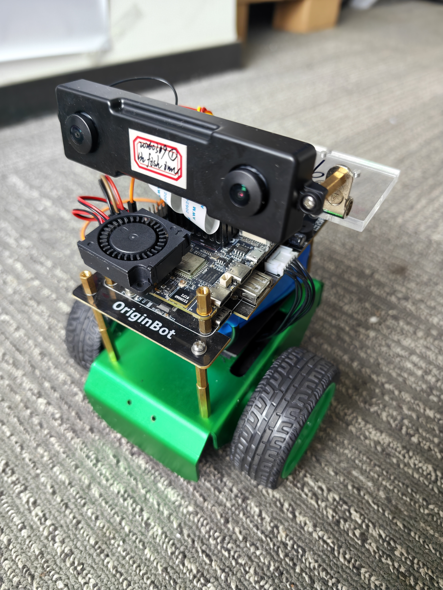 |
纯视觉 & Lifelong & 实时 3D建图和导航效果：

1.1 系统框架
整个系统只使用双目相机一个传感器，相机驱动已对双目RGB图像和IMU两种数据进行了时间同步。
flowchart TD
subgraph SRC[Sensor]
cam[stereo cam with IMU]
end
subgraph PERC[Perception System]
sde[stereo depth estimation]
yolov8_seg[yolov8-seg]
proj[projection]
end
subgraph SLAM[SLAM System]
front_vio[front end VIO]
back_end[back end]
end
subgraph OBS_REC[Obstacle Recognition]
gen_obs_recog[general obs recog]
pcl2grid[pcl to grid]
end
subgraph explore[Autonomous Exploration]
frontier_search[frontier search]
loop_trigger[loop closure trigger]
reloc_strategy[relocating strategy]
mode_switch[mapping/localization switch]
trapped_recovery[trapped recovery]
end
subgraph NAV[Nav2 System]
nav_frame[navigation framework]
end
%% 输入源分发
cam -->|Stereo RGB Images| sde
cam -->|RGB Image| yolov8_seg
cam -->|Stereo RGB Images| front_vio
cam -->|IMU| front_vio
%% 感知系统内部流向
sde -->|pcl| gen_obs_recog
sde -->|depth| proj
yolov8_seg -->|instance seg| proj
%% back_end
proj -->|masked depth| back_end
front_vio -->|odom| back_end
%% 障碍物识别系统内部流向
gen_obs_recog -->|general obstacle pcl| pcl2grid
%% 跨系统数据交互
back_end -->|slam info| mode_switch
back_end -->|slam info| loop_trigger
back_end -->|slam info| reloc_strategy
nav_frame -->|costmap| frontier_search
proj -->|semantic obstacle pcl| pcl2grid
pcl2grid -->|dynamic grid map| nav_frame
back_end -->|static grid map| nav_frame
back_end -->|pose and tf| nav_frame
frontier_search -->|goal| nav_frame
reloc_strategy -->|goal| nav_frame
loop_trigger -->|goal| nav_frame
trapped_recovery -->|goal| nav_frame
mode_switch -->|mode| back_end
1.2 双目深度估计
地瓜自研的采用GRU架构的双目深度估计算法，输入为双目图像数据，输出为左视图对应的视差图、深度图和点云，具有较好的数据泛化性和较高的推理效率。算法详细介绍：双目深度算法。
| 双目左图和视差图（室内） | 双目左图和视差图（室外） | 点云 |
|---|---|---|
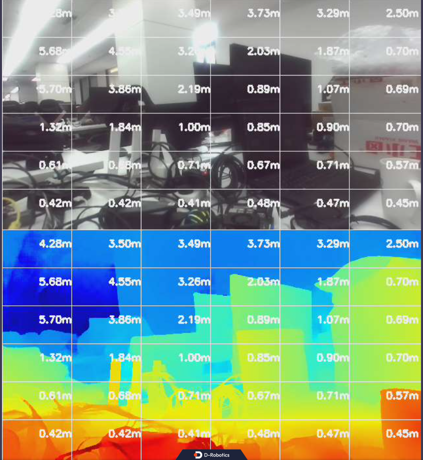 |
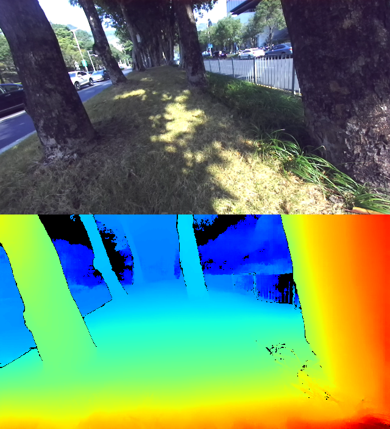 |
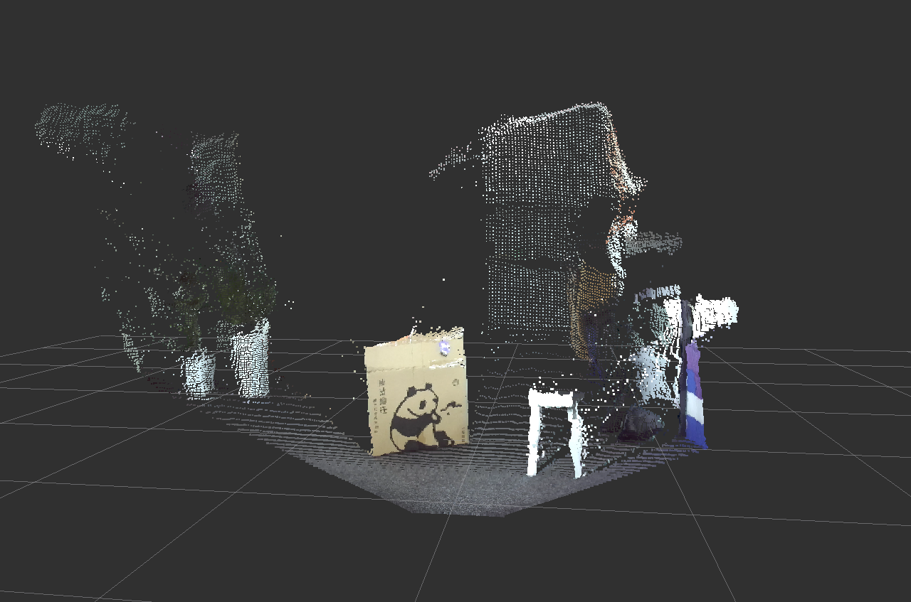 |
1.3 VSLAM
移动Solution中的VSLAM算法资源占用低（前端VIO占用1.5个CPU@8fps，后端回环和建图占用1个CPU），支持重定位，能够在动态场景下实时重建出场景的3D地图，可用于机器人6DoF位姿估计以及下游的导航和操作任务，同时具备Lifelong的能力。
1.3.1 VIO
VSLAM前端是一个基于双目图像和 IMU 的视觉惯性里程计 (VIO) 算法，用于在线持续估计设备6DoF位姿、速度和轨迹，并输出可用于定位、可视化或下游融合的里程计结果。
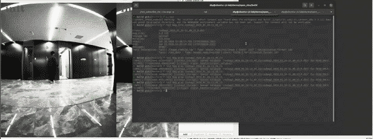
1.3.2 回环
VSLAM通过后端回环，消除前端VIO的累积误差，从而提升VIO的定位精度。
如下图，机器人移动4圈回到起点，轨迹总长度100米，每次回到起点map轨迹（有回环）都能闭合，里程计（无回环）轨迹持续漂移，最终里程计定位偏差为80cm。
| 回环轨迹（绿色）和里程计轨迹（蓝色） | 运动轨迹和回环 |
|---|---|
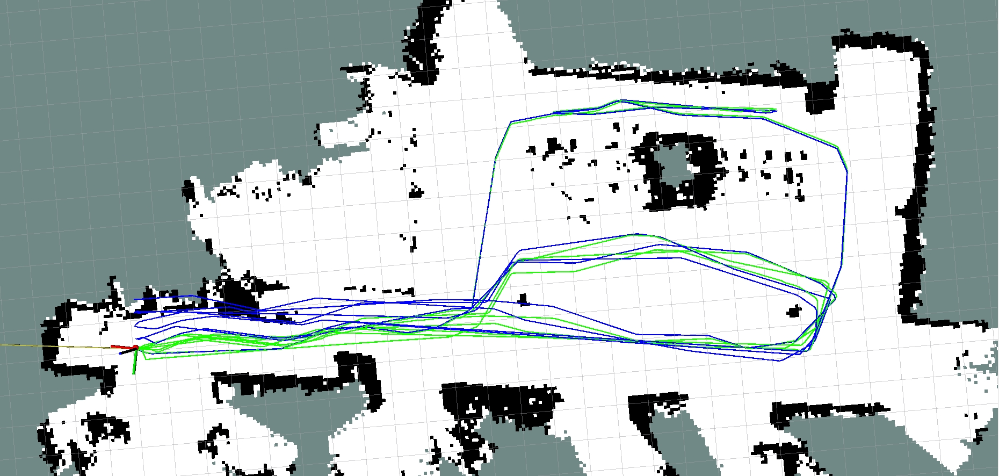 |
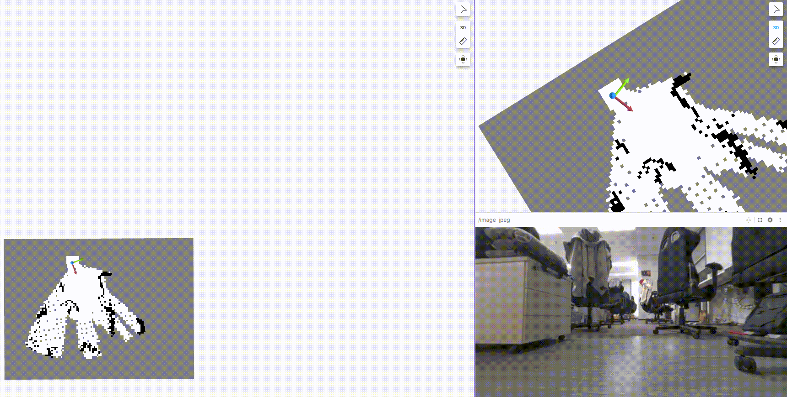 |
1.3.3 3D建图
VSLAM支持构建3D地图，可用于机器人定位以及下游导航和操作任务。
| 3D地图 | 3D建图过程 |
|---|---|
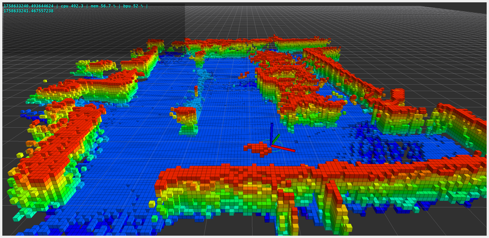 |
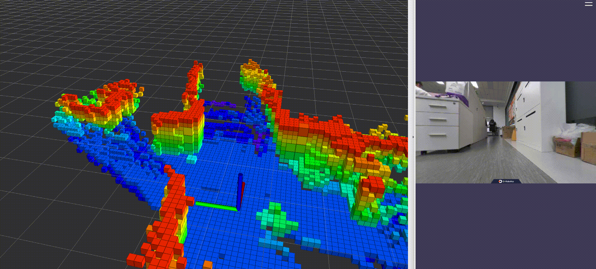 |
1.3.4 重定位
支持机器人在启动时和劫持后的重定位。
如下图，机器人被劫持后，在7秒内完成重定位。

1.3.5 动态障碍物去除
去除环境中的动态障碍物（例如室内的人），避免其干扰SLAM定位和建图。
如下图，人被识别为动态障碍物（地图中红色区域），未标记在SLAM的静态地图中（黑色区域）。
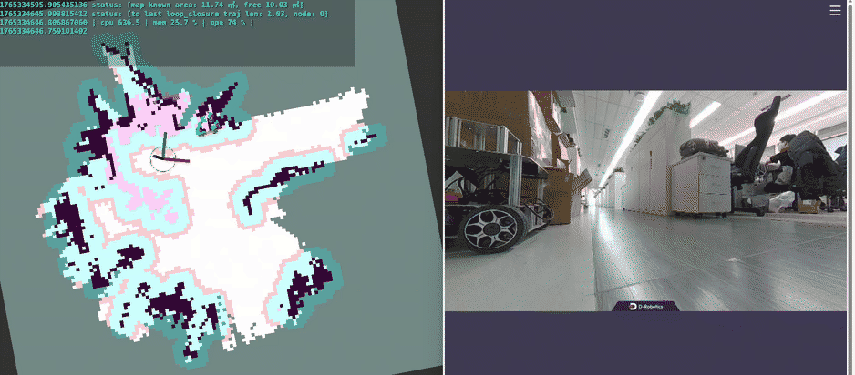
1.4 障碍物识别
提供了视觉语义障碍物识别和通用障碍物识别算法。
其中视觉语义障碍物识别算法能够识别出lidar无法识别的低矮/小尺寸障碍物，以及对应的障碍物语义信息。例如积木、书本、小玩偶等家庭常见障碍物。通用障碍物识别算法能够识别出一定尺寸范围的任意类别的障碍物。两种算法结合，保证了机器人能够识别出障碍物并绕障。
此外，障碍物识别具有低延迟的优势，保证了避障的及时性。从障碍物出现到识别成功并控制机器人，整个流程最大延迟为0.35秒（平均0.28秒），在机器人以0.2m/s速度移动的情况下，安全距离为7.0cm。
| 语义障碍物类别、尺寸和坐标信息 | 语义障碍物地图 | 通用障碍物点云 |
|---|---|---|
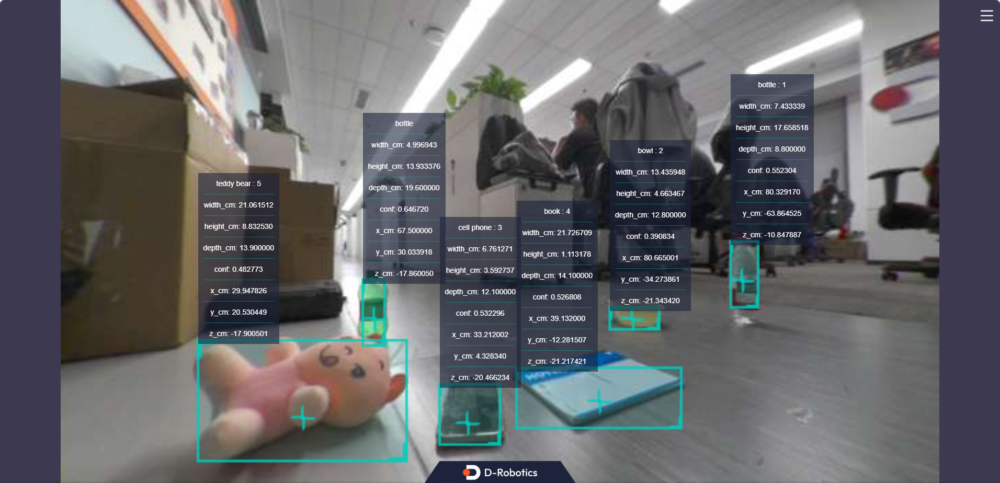 |
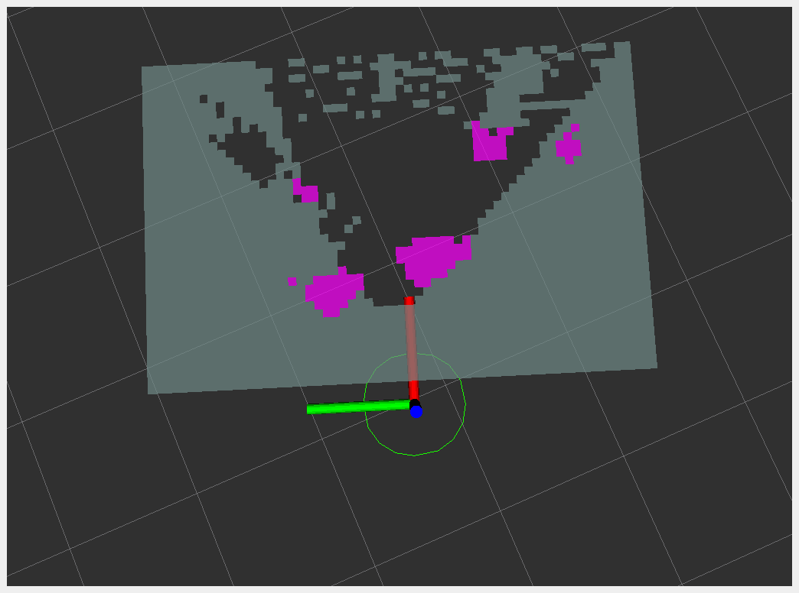 |
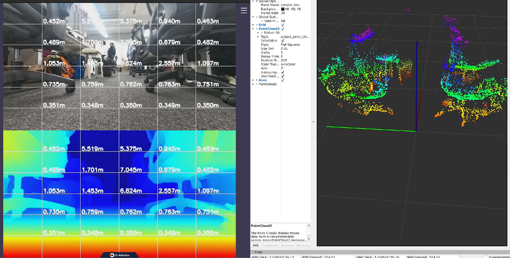 |
1.5 导航和避障
基于nav2框架，结合视觉传感器特性（相较于Lidar，相机FOV小），提供了深度优化的规划和避障算法，提升算法规划和避障的成功率和效率。
-
动态障碍物管理算法：引入障碍物的生命期管理和概率地图，提升避障和路径规划的成功率和效率。
-
环境探索算法：引入盲区地图和盲区探测算法，路径规划失败或者路径抖动情况下的路径搜索算法，解决由于相机视野盲区导致的碰撞问题。
-
优化的DWB控制算法：解决大转弯角度等特殊路径情况下轨迹规划失败的问题。
| 避障小物体 | 长距离导航 |
|---|---|
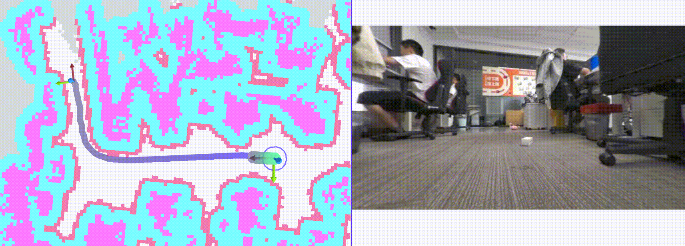 |
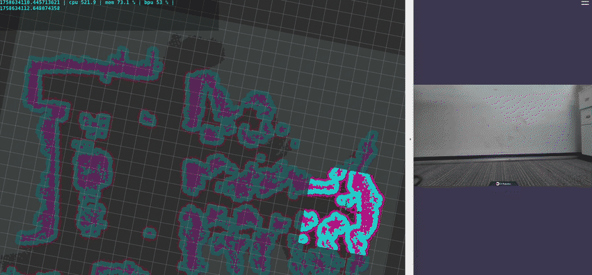 |
1.6 自主探索
自主探索功能会实时获取机器人状态、空间状态和任务状态信息，通过自主探索环境和管理系统状态，在用户无感的情况下，高效的完成复杂的任务。 实现开机即用（用户直接和机器人交互，无需预先建好图），越用越聪明。
其核心功能包括：
- 未知环境下自主探索建图 — 自动搜索地图边界frontier并导航前往，用户零干预下完成地图构建任务。
- 回环检测(loop closure)触发 — 自动触发回环检测，提升定位精度和地图质量。
- 重定位(relocating)策略 — 丢失定位时自动触发重定位策略，加速机器人恢复定位。
- SLAM模式切换 — mapping/localization模式自动切换，实现Lifelong SLAM。
- 脱困(trapped recovery) — 自动识别机器人是否被困，被困时自动脱困。
未知环境下探索建图：
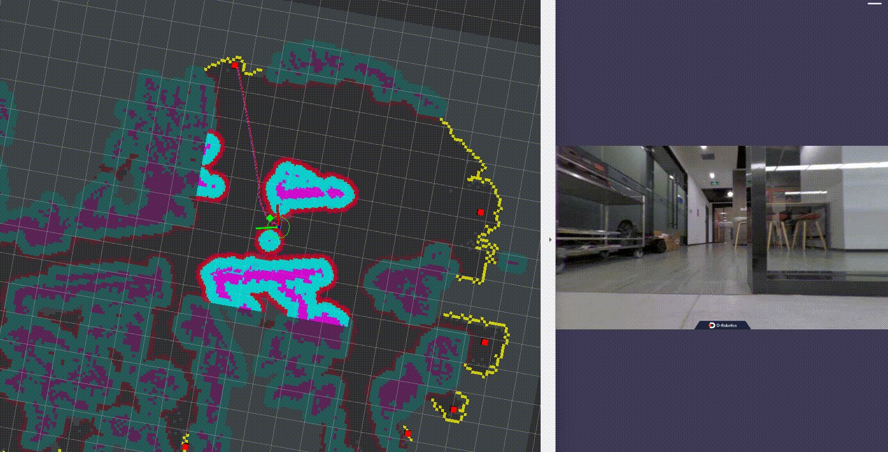
1.7 工具
移动Solution提供了多种用于开发和分析问题的工具，具体如下表：
| 工具 | 功能 |
|---|---|
| 数据采集工装 | 双目深度估计算法迭代。 |
| 云平台 | 数据标注和管理、算法训练、模型转换等全栈的算法和数据管理平台。 |
| 双目深度估计算法可视化评测工具 | 评测双目深度估计算法量化指标，以及可视化分析指标误差情况。 |
| 标定工具 | 双目相机内参标定；相机和机器人底盘外参标定。 |
| 轨迹规划算法分析工具 | 可视化DWB轨迹规划算法的计算过程和结果，用于优化轨迹规划算法功能。 |
| 运行时latency统计工具 | 统计时间窗口内功能模块的latency，包括模块的输出帧率，输入、处理和输出的平均、最大和最小延迟等数据，用于识别和优化系统pipeline的latency瓶颈。 |
| rviz hud | 将机器人的关键行为和系统状态信息，以overlay的形式在rviz上渲染。 |
| 数据trigger & recorder | 用于路径规划时自动触发录制系统状态数据，通过离线回放数据定位问题，支持录制触发前的数据（影子模式）。 |
| rviz hud（左上区域） | 离线回放trigger自动录制的数据 |
|---|---|
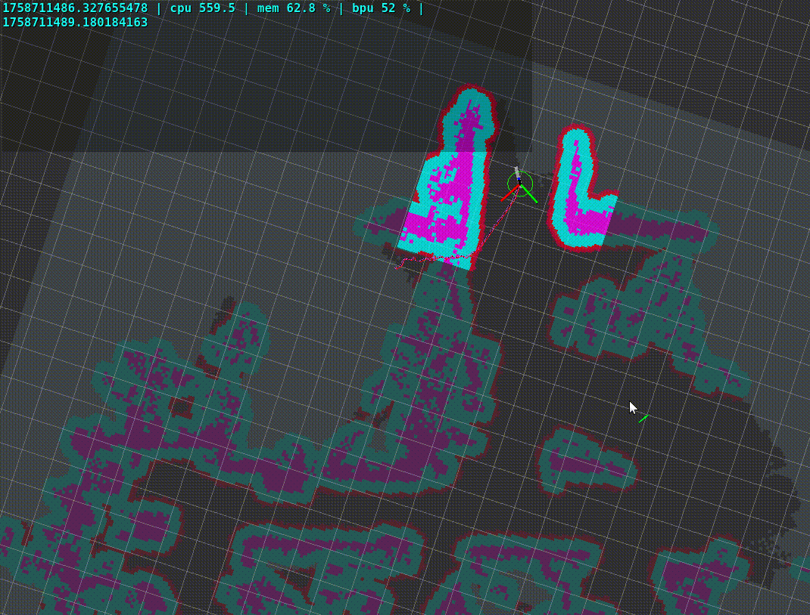 |
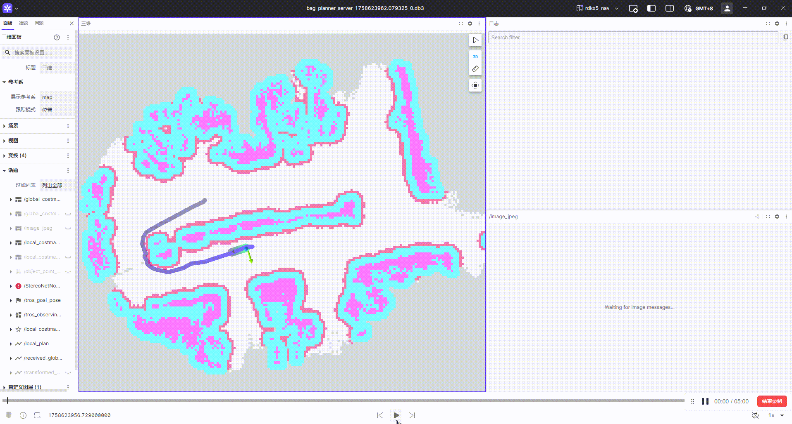 |
1.8 资源占用
| 功能 | CPU占用（注1） | BPU占用（%） | MEM占用（注2） |
|---|---|---|---|
| 环境感知（注3） | 120 | 50 | 320 MB（5%） |
| VSLAM | 115 | 0 | 682 MB（9.6%） |
| 规控 | 100 | 0 | 271 MB（3.8%） |
| 其他（注4） | 30 | —— | —— |
| 总计 | 365（45.6%） | 51 | 1273 MB（18.4%） |
注1：X5总共8核CPU，总CPU为800%。
注2：采用8G版本RDK X5，可用内存大小6.9GB。统计内存时已建地图面积110㎡，关键帧数量461。
注3：包含双目数据采集、双目深度估计算法、VIO、视觉语义障碍物识别算法和通用障碍物识别算法，图像采集频率6fps，gdc硬件resize。
注4：包含自主探索、状态监控等功能。不包含rviz、ssh连接等调试工具。
统计命令：
-
CPU占用： ps -aux –sort=%cpu
-
BPU占用： hrut_somstatus
-
MEM占用： top -b -n 1 -o %MEM
2. 套件清单
| OriginBot移动底盘 | RDK Stereo Camera GS130WI | RDK X5 8G |
|---|---|---|
提示
3. 安装硬件
3.1 RDK X5上安装双目相机
RDK Stereo Camera GS130WI 安装在RDK X5上的方法参考手册4.2. 硬件连接章节介绍。
3.2 底盘上安装 RDK X5
参考OriginBot智能机器人开源套件的安装处理器板卡章节内容，将RDK X5安装在OriginBot底盘上。
提示 给RDK X5供电的移动电源输出要求电压为5V，电流3A以上。
双目相机和RDK X5安装到OriginBot底盘上的效果图：
安装到其他底盘
参考本页面适配其他底盘章节。
4. 软件配置
4.1 系统和TROS
RDK X5已安装RDK OS系统镜像，已安装TROS并升级到最新版本。
注意！请使用root用户名登录RDK X5。
SSH登录建议 建议PC使用Windows系统，并使用MobaXterm工具通过SSH连接RDK X5。
移动Solution套件版本依赖的TROS版本对应关系如下：
| 移动Solution套件版本号 | TROS版本号 |
|---|---|
| V0.0.5 | 2.5.2 |
移动Solution套件版本发布记录请查看版本发布记录章节。查看版本方法参考软件配置章节。
查看当前TROS版本命令：apt show tros-humble，详细参考查看当前TROS版本。
4.2 环境配置
配置CPU为性能模式和超频
终端下执行以下命令：
echo "echo 1 > /sys/devices/system/cpu/cpufreq/boost" >> ~/.bashrc
echo "echo performance > /sys/devices/system/cpu/cpu0/cpufreq/scaling_governor" >> ~/.bashrc
echo "echo performance > /sys/devices/system/cpu/cpufreq/policy0/scaling_governor" >> ~/.bashrc
配置ROS Domain ID
终端下执行以下命令：
# 使用命令export ROS_DOMAIN_ID=<your_domain_id>配置ROS Domain ID，其中<your_domain_id>的取值范围是[0, 101]
# 例如export ROS_DOMAIN_ID=42
# 将配置命令放在启动脚本中执行
echo "export ROS_DOMAIN_ID=42" >> ~/.bashrc
使用cyclonedds
终端下执行以下命令，将配置命令放在启动脚本中执行，使每个终端生效：
echo "export RMW_IMPLEMENTATION=rmw_cyclonedds_cpp" >> ~/.bashrc
4.3 安装依赖
安装ROS功能包
在RDK X5上执行如下命令，安装必要的软件:
apt update
apt upgrade -y
apt install ros-dev-tools ros-humble-cyclonedds* ros-humble-rmw-cyclonedds* ros-humble-rviz* ros-humble-rtabmap* ros-humble-octomap-rviz-plugins ros-humble-teleop-twist-keyboard ros-humble-nav* ros-humble-robot-localization -y
提示
- 如遇到执行apt命令速度慢的问题，可以尝试使用社区中广受好评的第三方ROS安装工具，例如“小鱼的一键安装系列”（FishROS）。这些工具通常会处理好软件源配置、依赖安装等繁琐步骤。
- 例如使用“小鱼的一键安装系列”更新软件源命令：wget http://fishros.com/install -O fishros && bash fishros，选择[5] 一键配置:系统源，后续根据提示进行选择。
- 配置完成后如果遇到apt安装ROS2包失败，请更新ros签名：sudo curl -sSL https://raw.githubusercontent.com/ros/rosdistro/master/ros.key -o /usr/share/keyrings/ros-archive-keyring.gpg。
安装yq
安装yq，用于处理 YAML 的命令行工具。
wget https://github.com/mikefarah/yq/releases/latest/download/yq_linux_arm64 -O /usr/local/bin/yq
chmod +x /usr/local/bin/yq
yq --version
4.4 安装移动Solution
mkdir /userdata/vims
mkdir /userdata/rtabmap
cd /userdata/vims
wget https://archive.d-robotics.cc/TogetheROS/files/vision_mobile_solution/install-vims-v0.0.5.tar.gz
tar -zxvf /userdata/vims/install-vims-v0.0.5.tar.gz -C /userdata/vims
4.5 配置相机
更新驱动
基于RDK X5 3.5.0版本系统，使用以下3个安装包更新驱动（拷贝到X5后使用dpkg -i hobot-*安装）。
wget https://archive.d-robotics.cc/TogetheROS/files/vision_mobile_solution/deb/hobot-kernel-headers_3.0.4-20260514041655_arm64.deb
wget https://archive.d-robotics.cc/TogetheROS/files/vision_mobile_solution/deb/hobot-boot_3.1.0-20260514041708_arm64.deb
wget https://archive.d-robotics.cc/TogetheROS/files/vision_mobile_solution/deb/hobot-dtb_3.0.8-20260514041655_arm64.deb
sudo dpkg -i hobot-kernel-headers_3.0.4-20260514041655_arm64.deb hobot-boot_3.1.0-20260514041708_arm64.deb hobot-dtb_3.0.8-20260514041655_arm64.deb
连接硬件
参考4.2. 硬件连接。
配置软件
参考RDK X5配置。
4.6 配置生效
reboot重启RDK X5，使配置生效。
4.7 查看软件版本号
软件安装完成后，RDK X5终端输入如下命令，查看套件版本号：
source /opt/tros/humble/local_setup.bash
source /userdata/vims/install/local_setup.bash
grep "<version>" `ros2 pkg prefix tros_vision_nav --share`/package.xml
输出如下信息（以0.0.1版本为例）：
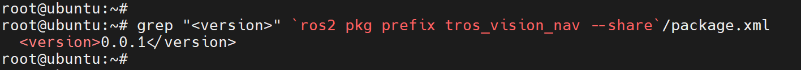
5. 基础功能测试
测试双目数据采集和深度估计。
安装完成双目相机后，RDK X5上运行如下命令，启动双目数据采集和深度估计：
source /opt/tros/humble/local_setup.bash
source /userdata/vims/install/local_setup.bash
ros2 launch hobot_stereonet stereonet_model_web_visual_component_v2.4_int16_uncertainty.launch.py mipi_image_width:=640 mipi_image_height:=352 mipi_rotation:=0.0 mipi_cal_alpha:=0.0 need_rectify:=False mipi_image_framerate:=20.0
启动成功后，运行终端输出帧率统计信息（左下图）。PC端打开网页浏览器查看左目RGB图和深度图（右下图），在浏览器输入 http://ip:8000 (图中IP为RDK的WIFI IP地址，例如192.168.1.100)。
| 运行终端输出的帧率统计信息 | PC端网页浏览器查看左目RGB图（上）和深度图（下） |
|---|---|
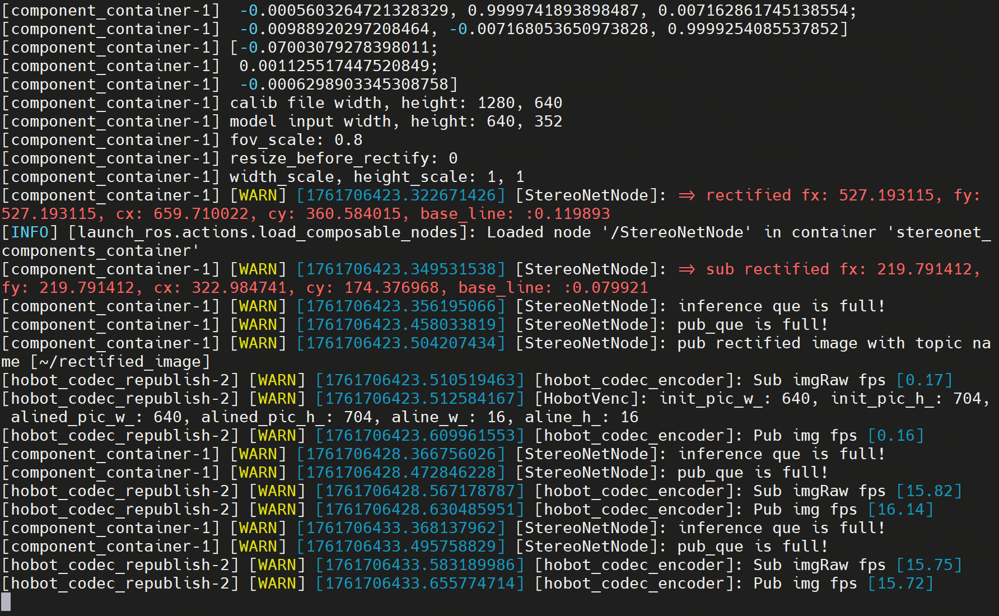 |
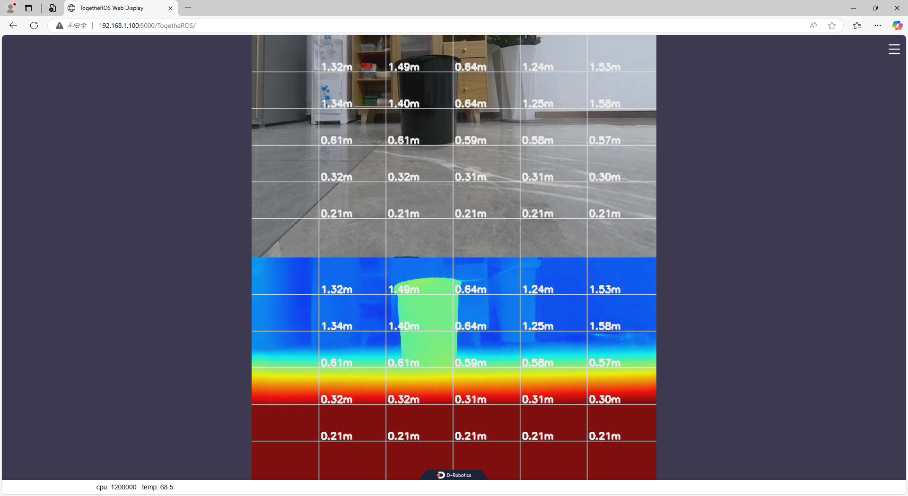 |
如果启动失败，请参考双目深度算法使用手册排查问题。
如何验证双目相机的左右目是否连接正确 当相机的左右目接反时，程序能够正常运行，但是会导致深度估计错误。 遮住相机的左目，如果网页浏览器上显示的RGB图被遮挡，说明左右目接线正确。正确接线时，遮住左目图的现象如下：
| 遮住左目相机 | 网页浏览器上显示的RGB图被遮挡 |
|---|---|
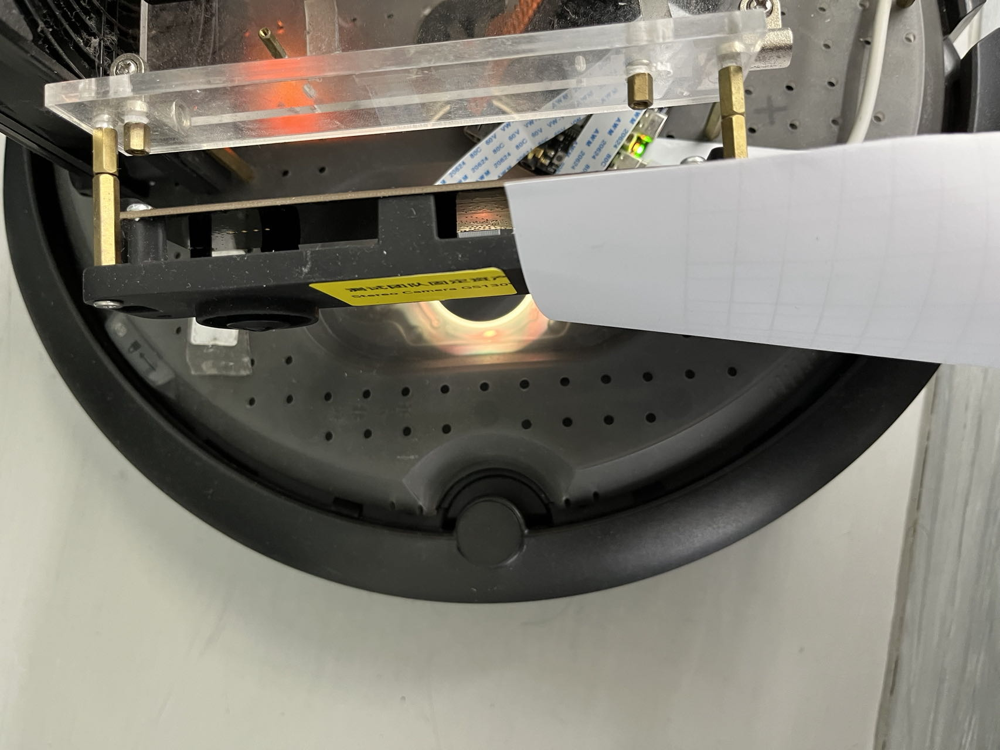 |
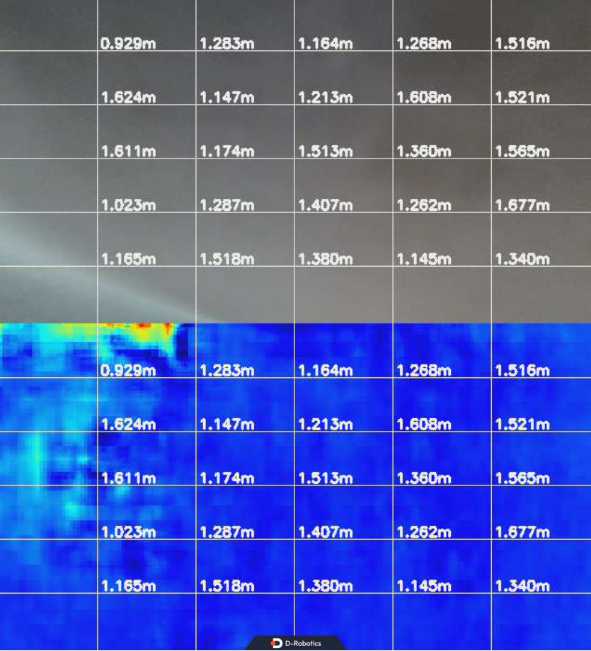 |
6. 外参标定
以下两种情况下，需要重新执行标定： 首次使用安装包，或者重新更新了安装包。 双目相机安装位置发生变化时。
6.1 相机和底盘外参标定（粗标定）
本章节介绍不依赖标定治具的情况下，实现相机和底盘之间x, y, z, roll, pitch外参的快速粗标定。 此方法无法标定yaw角，如果相机和底盘之间yaw角较大，或者对标定精度有极高要求，请参考相机和底盘外参标定（高精度标定）进行标定。
简单、快速的粗标定能够满足基本使用需求，建议采用此标定方法。
标定平移向量XY
使用尺子测量相机左目和底盘base_footprint之间的XY偏移（右手坐标系，X为机器人朝向的正前方，Y向左，Z向上）。 标定参数说明和标定方法，及其和配置参数的对应关系，示例工装的标定结果如下表：
| 标定参数 | 说明 | 配置参数 | 标定结果 |
|---|---|---|---|
| X偏移 | 双目相机左目相对于底盘两个轮子连线，X方向的偏移 | robot_to_camera_x | 0.105m |
| Y偏移 | 双目相机左目相对于底盘两个轮子连线的中心点，Y方向的偏移 | robot_to_camera_y | 0.018m |
修改配置文件中calibration的参数，设置平移向量：
# 打开配置文件
source /opt/tros/humble/local_setup.bash
source /userdata/vims/install/local_setup.bash
vi `ros2 pkg prefix tros_vision_nav --share`/params/params.yaml
# 使用标定结果设置 robot_to_camera_x robot_to_camera_y
标定旋转矩阵和平移向量Z
准备环境
将机器放置在平整地面上，前方1m范围内，左边、右边0.5m范围内没有任何障碍物。
启动标定程序
打开RDK终端，启动环境感知：
source /opt/tros/humble/local_setup.bash
source /userdata/vims/install/local_setup.bash
YAML_CONFIG_FILE=`ros2 pkg prefix tros_vision_nav --share`/params/params.yaml stereonet_pub_web=True run_perc=False run_slam=False run_nav=False run_explore=False run_mask_depth=False pcl_process_mode=1 pcl_in_pcl_frame_id=camera_link pcl_out_pcl_frame_id=camera_link pcl_filter_max_x=1.0 pcl_filter_max_y=0.5 pcl_filter_min_y=-0.5 pcl_filter_min_z=-1.0 max_obstacle_height=2.0 bash `ros2 pkg prefix tros_vision_nav --share`/launch/run_launch.sh
此时PC打开WEB浏览器（chrome/firefox/edge）输入 http://IP:8000（IP为RDK IP地址），能够查看到相机画面。 RVIZ上，将坐标系设置为base_footprint，勾选PclObstacle，移动底盘，确保rviz上渲染的点云是平面。
| WEB可视化 | RVIZ可视化 |
|---|---|
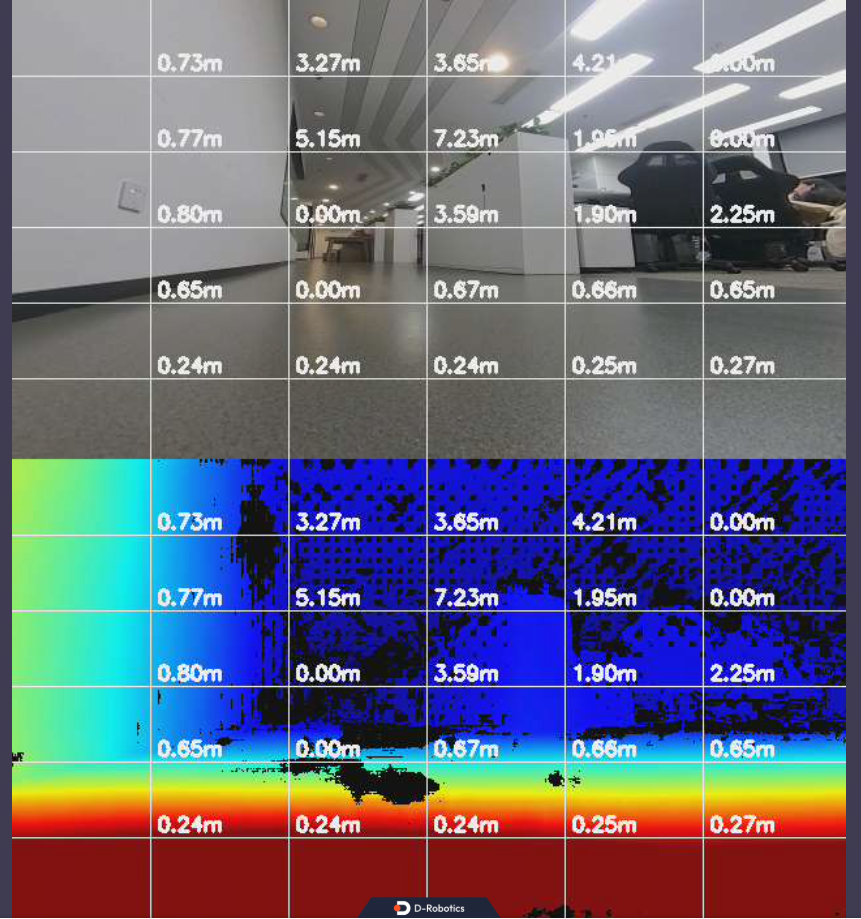 |
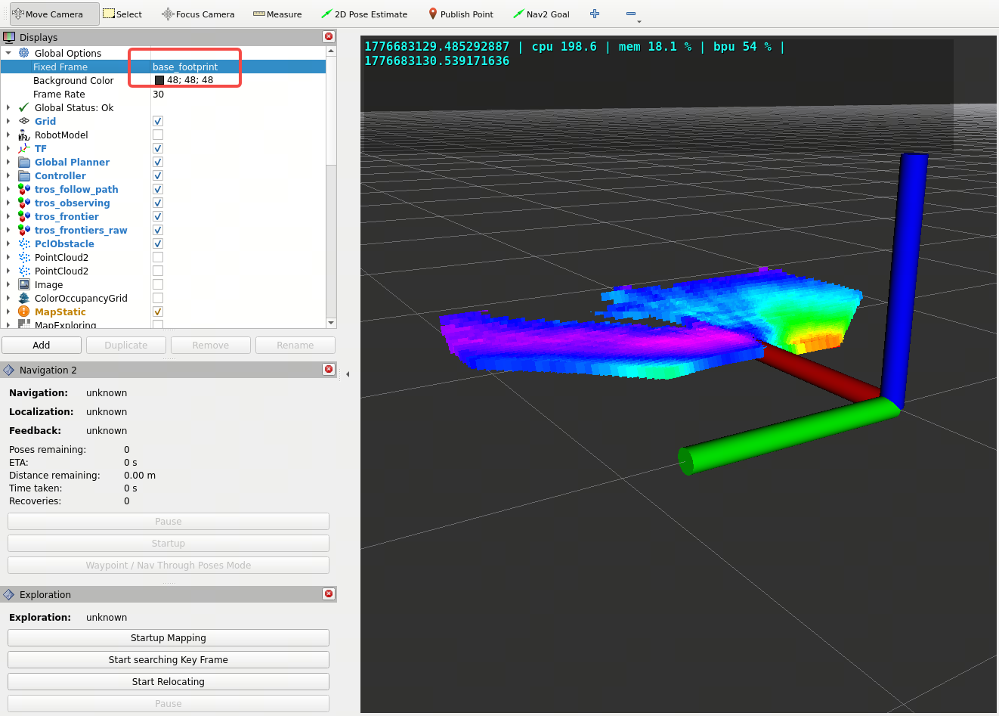 |
更新标定参数
RDK终端将会打印如下标定结果信息：
[tros_container-2] [WARN] [1776682622.617492624] [pcl_filter]: Sensor Roll: 0.014, 0.792°, Pitch: 0.133, 7.622°, Camera Height: 0.146 m
[tros_container-2] [WARN] [1776682622.617754583] [pcl_filter]: You can set tf with cmd: 'run tf2_ros static_transform_publisher --roll -0.014 --pitch -0.133 --x 0.0 --y 0.0 --z 0.146 --frame-id base_footprint --child-frame-id camera_link'
说明标定出来的相机距离地面高度（Camera Height）为0.146 m。
-
方法一（动态生效）：可直接在终端中执行上述
run tf2_ros static_transform_publisher命令，标定参数将立即生效。该方式适用于临时调试，重启后失效。 -
方法二（永久生效）：修改配置文件中calibration的参数，使用log中run tf2_ros static_transform_publisher提示的–roll和–pitch设置旋转矩阵，使用Camera Height（–z）设置robot_to_camera_z：
# 打开配置文件
source /opt/tros/humble/local_setup.bash
source /userdata/vims/install/local_setup.bash
vi `ros2 pkg prefix tros_vision_nav --share`/params/params.yaml
# 使用标定结果中的 --roll 和 --pitch 设置 robot_to_camera_roll robot_to_camera_pitch
# 使用Camera Height（--z）设置robot_to_camera_z
使用（验证）标定参数
停止终端下的程序，将机器放置在平整地面上，前方1m范围内，左边、右边0.5m范围内没有任何障碍物。运行如下命令：
source /opt/tros/humble/local_setup.bash
source /userdata/vims/install/local_setup.bash
YAML_CONFIG_FILE=`ros2 pkg prefix tros_vision_nav --share`/params/params.yaml stereonet_pub_web=True pcl_en_debug=True run_perc=False run_slam=False run_nav=False run_explore=False run_mask_depth=False pcl_filter_max_y=0.5 pcl_filter_min_y=-0.5 bash `ros2 pkg prefix tros_vision_nav --share`/launch/run_launch.sh
终端输出如下log，说明标定正确：
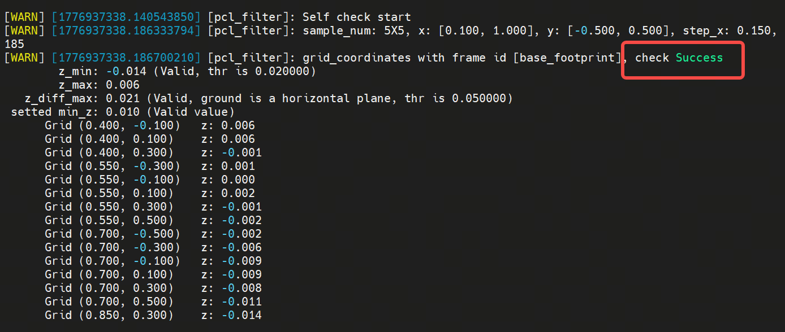
RVIZ上，将坐标系设置为base_link/base_footprint，勾选PclObstacle。在机器人前方摆放障碍物，可以看到识别出的方盒和水瓶两种障碍物的点云：
| WEB可视化 | RVIZ可视化 |
|---|---|
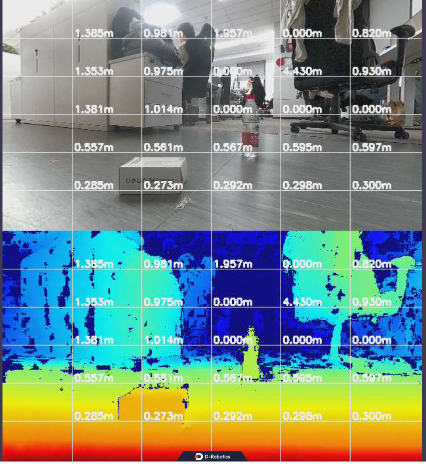 |
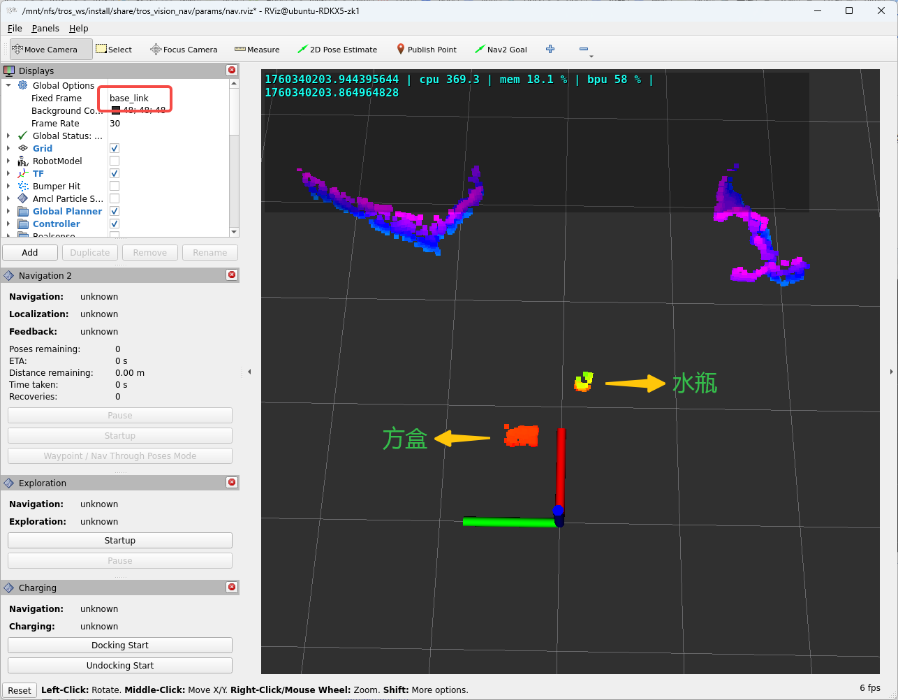 |
6.2 底盘高度标定
通过标定，得到底盘的高度，用于过滤高于底盘的障碍物，使机器人能够从高于底盘的障碍物下方通过（例如从桌子下面穿过）。不同工装对应的参数不同。
开始标定
底盘安装完成后，使用尺子测量底盘最上方和地面之间的高度。例如对于如下图工装，测量出来的底盘高度为0.22m。为了使机器人能够顺利避障高出障碍物，选取0.25m作为底盘高度。
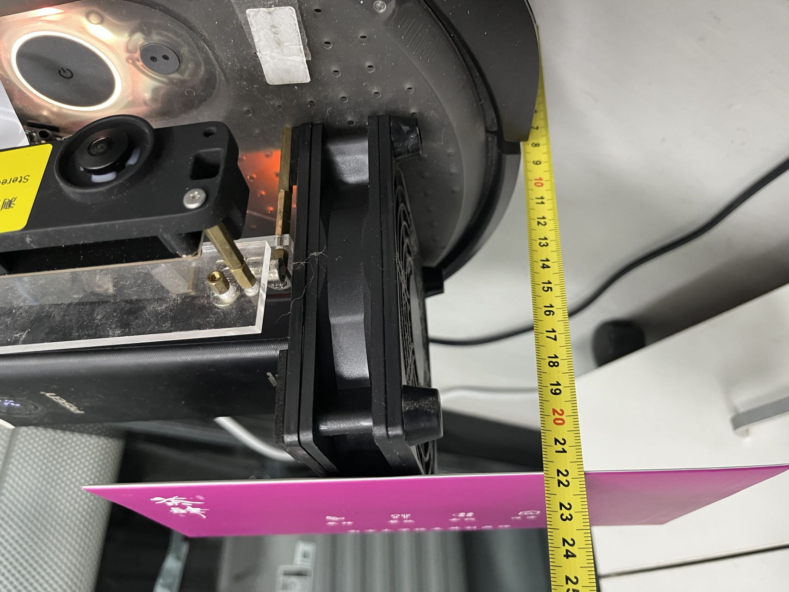
标定出来的参数用于设置配置文件中参数：rtabmap_Grid_MaxObstacleHeight:=”‘0.25’” max_obstacle_height:=0.25。
# 打开配置文件
source /userdata/vims/install/local_setup.bash
vi `ros2 pkg prefix tros_vision_nav --share`/params/params.yaml
# 使用标定结果设置 rtabmap_Grid_MaxObstacleHeight max_obstacle_height
使用（验证）标定参数
在机器人正前方，摆放不同高度障碍物，用于验证标定结果。 打开RDK X5终端，运行如下命令，包含环境感知，和rviz可视化：
source /opt/tros/humble/local_setup.bash
source /userdata/vims/install/local_setup.bash
YAML_CONFIG_FILE=`ros2 pkg prefix tros_vision_nav --share`/params/params.yaml stereonet_pub_web=True run_nav=False run_explore=False rtabmap_Grid_3D="'true'" bash `ros2 pkg prefix tros_vision_nav --share`/launch/run_launch.sh
RVIZ上打开障碍物点云的渲染，如下图：
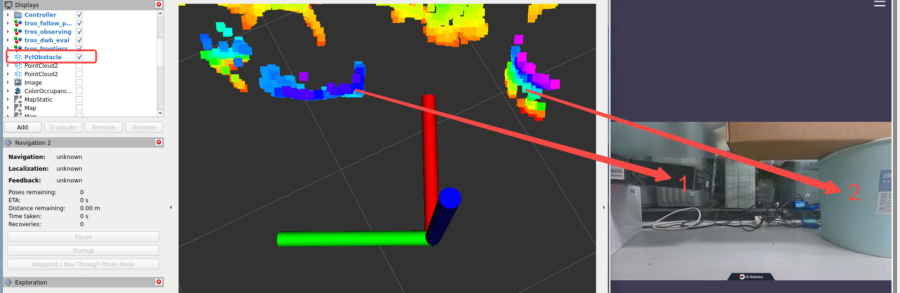
其中障碍物1离地高度0.18m（低于阈值0.25m），障碍物3离地高度0.27m（高于阈值0.25m）。可以看到地图只有障碍物1的渲染，无障碍物3，说明标定参数生效。
7. 应用示例
本章节介绍使用移动底盘运行VSLAM、导航和避障等示例的方法。
如果您没有移动底盘，仍然能够运行VSLAM（VIO和3D建图）示例，具体方法参考手持建图章节。
7.1 Checklist
运行应用示例前，请先检查是否已经完成必要的基础配置项，并已更新到配置文件：
`ros2 pkg prefix tros_vision_nav --share`/params/params.yaml
| 基础配置项 | 参数 | 配置方法 |
|---|---|---|
| 相机和底盘外参 | robot_to_camera_x robot_to_camera_y robot_to_camera_z robot_to_camera_roll robot_to_camera_pitch |
相机和底盘外参标定章节 |
| 底盘高度 | rtabmap_Grid_MaxObstacleHeight max_obstacle_height |
底盘高度标定章节 |
| 验证标定参数 | —— | 相机和底盘外参标定章节中【使用（验证）标定参数】小节 |
提示： 如未使用套件默认的硬件，即存在如下任意一种情况，请完成下面表格中的额外配置项。
- 未使用 OriginBot 底盘
- 未使用 RDK Stereo Camera GS130WI（70mm 基线(带IMU)双目相机）
- 未使用 VIO （vio模式），使用轮式里程计（wheel模式）
| 额外配置项 | 参数 | 配置方法 |
|---|---|---|
| 底盘类型 | robot_base | 根据机器人底盘类型选择 |
| 相机参数 | mipi_rotation | RDK Stereo Camera GS130WI（70mm 基线(带IMU)双目相机）设置为0.0，80mm基线（不带IMU）双目相机设置为90.0 |
| 里程计类型 | odom_type | wheel/vio |
| 运动类型 | rtabmap_Reg_Force3DoF | vio 模式设置 False，wheel 模式选择 True |
| 运动类型 | rtabmap_Mem_UseOdomGravity | vio 模式设置 True，wheel 模式选择 False |
提示： 如需了解更详细的常用模式配置说明，请参考 FAQ - 常用模式配置。
注意：
- 基于点云的通用障碍物识别算法，默认开启了自适应阈值（
params.yaml配置文件中的en_pcl_filter_min_z_auto_adjust配置项），即启动时自动计算并更新阈值。- 启动时要求机器放置在平整、无反光地面上，地面上可以存在障碍物，但是机器人正前方[0.3米, 1.0米]范围内至少存在一块15cm*15cm的无障碍物区域。
7.2 双目视觉里程计（VIO）
本章节介绍如何启动双目视觉里程计，并可视化机器人的移动轨迹。
启动VIO
打开RDK X5终端，运行如下命令，包含双目深度估计，VIO，rviz可视化：
source /opt/tros/humble/local_setup.bash
source /userdata/vims/install/local_setup.bash
YAML_CONFIG_FILE=`ros2 pkg prefix tros_vision_nav --share`/params/params.yaml odom_type=vio stereonet_pub_web=True run_pcl2grid=False run_rviz=True run_perc=False run_slam=False run_nav=False run_explore=False run_mask_depth=False bash `ros2 pkg prefix tros_vision_nav --share`/launch/run_launch.sh
配置RVIZ
RVIZ上，将坐标系设置为base_link，勾选traj_odom，并选择topic为/drobotics_vio/pathimu。
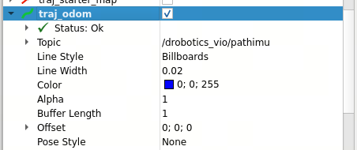
启动键盘控制
打开RDK X5终端，运行如下命令，启动键盘控制功能包，用于使用键盘控制机器人移动：
source /opt/tros/humble/local_setup.bash
ros2 run teleop_twist_keyboard teleop_twist_keyboard
测试
使用键盘控制机器人移动，rviz上将会渲染机器人移动轨迹：
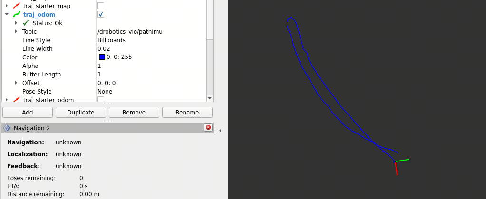
7.3 VSLAM建图
本章节介绍如何使用VSLAM生成用于导航的2D地图。
启动solution
打开RDK X5终端，运行如下命令，包含环境感知，VSLAM，导航，自主探索建图，rviz可视化：
source /opt/tros/humble/local_setup.bash
source /userdata/vims/install/local_setup.bash
mkdir -p /userdata/rtabmap/
# 删除地图文件
rm /userdata/rtabmap/office.db
YAML_CONFIG_FILE=`ros2 pkg prefix tros_vision_nav --share`/params/params.yaml bash `ros2 pkg prefix tros_vision_nav --share`/launch/run_launch.sh
提示
- 当Rviz上渲染出地图，并且Exploration状态为IDLE时，表示启动完成，可以开始启动自主探索建图。
- 建图过程中，rviz上（下图）会渲染SLAM回环发生时刻（loop_closure at stamp，只显示了时间戳秒部分）、地图面积（map known area）和距离上次回环机器人的移动轨迹长度（to last loop_closure traj len）。
- 当距离上次回环的轨迹长度超过5米时，将会自动暂停自主探索，控制机器人回到已建图区域，使其发生回环，避免由于累积误差过大导致地图出现偏差。
- 发生回环后，rviz上将会刷新回环发生时刻，以及轨迹长度，此时可以恢复自主探索建图。 完成建图后，如发现地图存在偏移或者其他明显错误，需要通过导航或者手动控制机器人到错误地图处更新地图。
- 默认关闭3D建图，启动建图时使用参数打开：rtabmap_Grid_3D=”‘true’“。开启3D建图将会导致回环检测速度显著变慢，请根据实际需求选择是否开启3D建图。
| 启动完成后rviz端的渲染 | 自主探索建图中rviz端的渲染 |
|---|---|
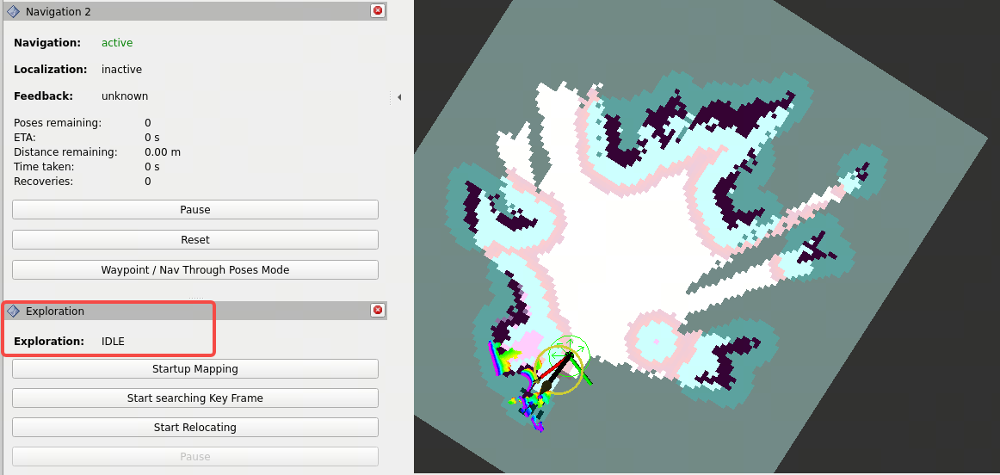 |
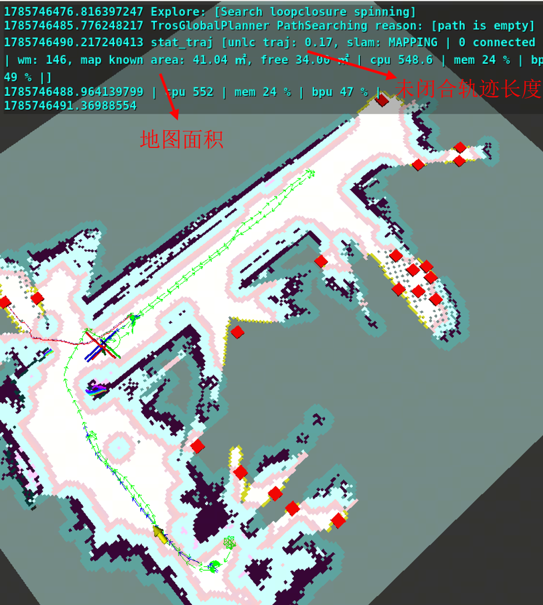 |
配置RVIZ
RVIZ上，将坐标系设置为map。
自主探索建图
在RVIZ上启动自主探索建图：
| rviz自主探索建图按键说明 | 自主探索建图过程 |
|---|---|
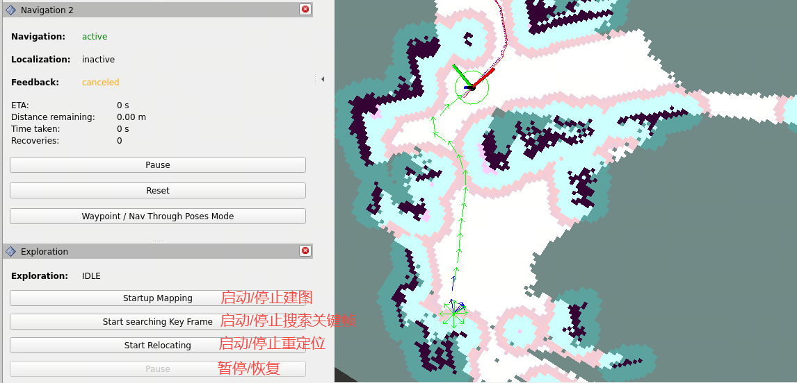 |
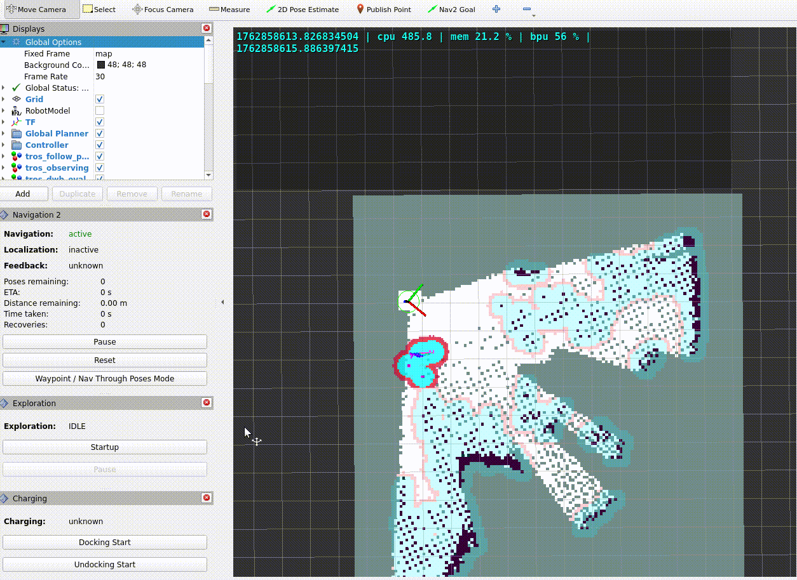 |
提示
- 自主探索建图过程中，选择Pause（暂停）按键将会暂停探索，并将本次探索目标位置加入灰名单，选择Resume（继续）按键将会选择一个新的目标位置进行探索。
- 当所有目标都探索完成后，将会清除灰名单中的目标。
- 自主探索建图过程中，如果需要跳过当前探索目标，可以使用Pause（暂停）功能。
手动控制建图
打开终端，启动键盘控制功能包，使用键盘控制机器人移动实现建图：
source /opt/tros/humble/local_setup.bash
ros2 run teleop_twist_keyboard teleop_twist_keyboard
地图面积
建图过程中，rviz上将会实时显示地图面积：
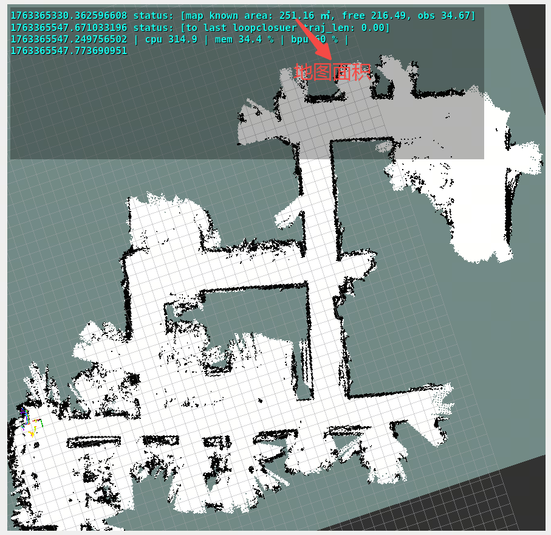
7.4 导航和避障
本章节介绍如何使用已经创建好的地图进行导航和避障。
启动solution
打开RDK X5终端，运行如下命令，包含环境感知，VSLAM，导航，重定位，rviz可视化：
source /opt/tros/humble/local_setup.bash
source /userdata/vims/install/local_setup.bash
YAML_CONFIG_FILE=`ros2 pkg prefix tros_vision_nav --share`/params/params.yaml bash `ros2 pkg prefix tros_vision_nav --share`/launch/run_launch.sh
提示 建图和定位两种模式的启动命令相同，solution内部根据当前环境和系统状态，自动切换模式。
启动时重定位
定位模式下，SLAM启动后，机器人将会自动进入到重定位状态，定位成功后RVIZ上显示如下启动重定位成功信息：
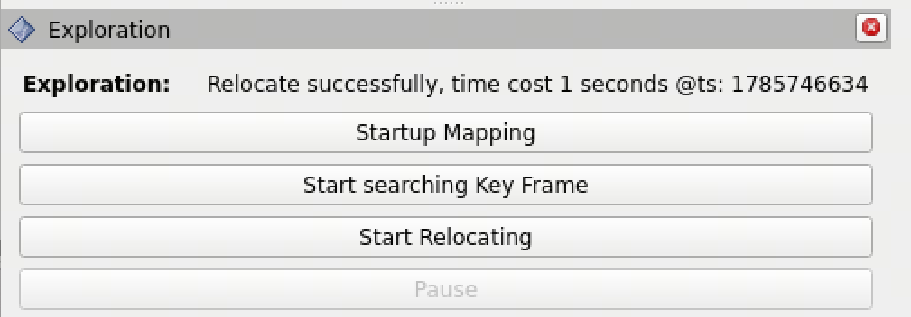
绑架后重定位
定位模式下，抬起机器人，搬移到新位置并放回地面上后，机器人将会自动进入到重定位状态，重定位中和重定位成功后RVIZ上显示如下信息：
| 重定位中 | 重定位成功 |
|---|---|
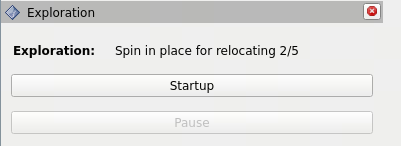 |
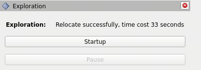 |
重定位过程：
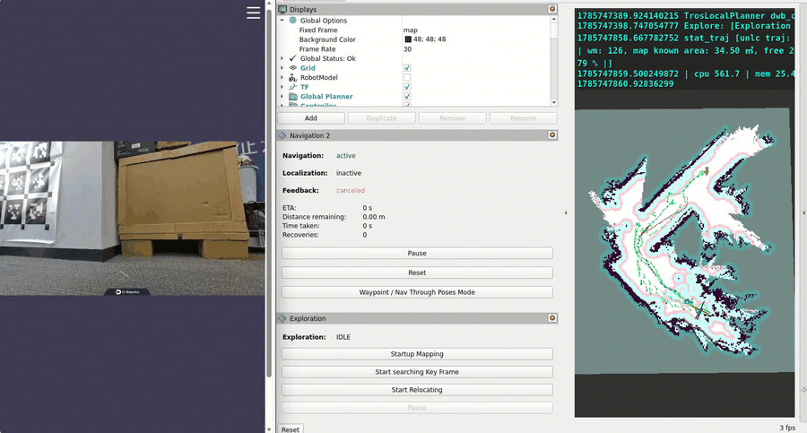
导航效果
在RVIZ上选择导航的目标点，导航过程和完成后的结果如下：
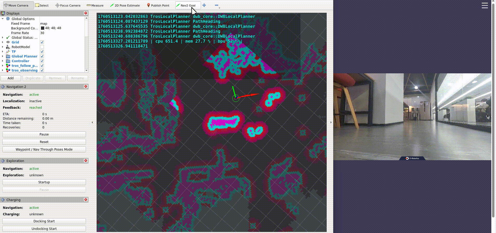
7.5 手持建图
本章节介绍在没有移动底盘的情况下，运行VSLAM（VIO和3D建图）示例的方法。
-
参考RDK X5上安装双目相机和软件配置章节完成相机的安装和配置。
-
打开RDK X5终端，运行如下命令，包含base_link和base_footprint之间的tf变换，环境感知，VSLAM，rviz可视化：
source /opt/tros/humble/local_setup.bash
source /userdata/vims/install/local_setup.bash
ros2 run tf2_ros static_transform_publisher --frame-id base_link --child-frame-id base_footprint --z -0.0 &
YAML_CONFIG_FILE=`ros2 pkg prefix tros_vision_nav --share`/params/params.yaml rtabmap_Grid_3D="'true'" rtabmap_Grid_MaxObstacleHeight="'0.75'" run_pcl2grid=False run_nav=False run_explore=False localization=False bash `ros2 pkg prefix tros_vision_nav --share`/launch/run_launch.sh
- 手持RDK X5缓慢移动，支持roll和pitch角度变化，定位和建图效果如下：

7.6 人机交互[TODO]
8. 适配其他底盘
本章节介绍将基于VIO算法的移动Solution套件迁移到其他底盘的方法（如自研底盘myrobot）。 以下以自研底盘（myrobot）举例介绍适配底盘方法。
8.1 前置条件
- 由于采用VIO作为里程计，底盘只需要电机，无需编码器和IMU。
- 已完成通过MCU控制自研底盘电机。
- 已完成基于ROS2 Humble版本的电机驱动功能（例如功能包为myrobot_base）开发。能够使用ROS2的键盘遥控工具（teleop_twist_keyboard功能包），通过键盘发送控制指令来操作机底盘移动。
8.2 连接硬件
将RDK X5和相机固定到自研底盘上。
使用串口通信线连接MCU控制器和RDK X5。其中RDK X5的串口GND, TX, RX分别对应的6, 8, 10管脚。
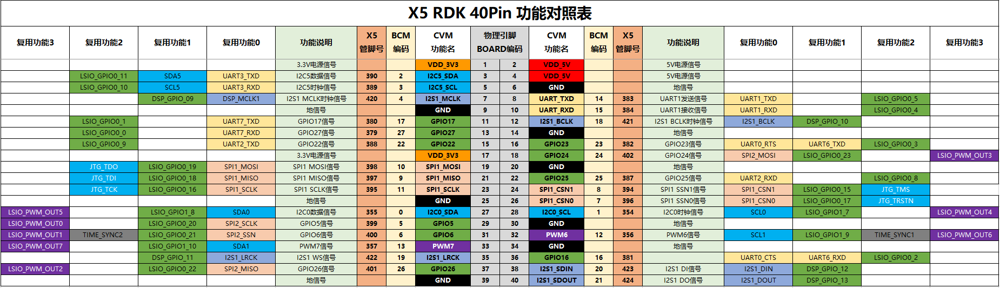
8.3 安装软件
将ROS2 Humble版本的电机驱动功能（myrobot_base功能包）迁移到RDK X5上。
RDK X5上运行myrobot_base功能包。
RDK X5上运行ROS2的键盘遥控工具：
ros2 run teleop_twist_keyboard teleop_twist_keyboard
通过键盘能够正常控制底盘运动，说明硬件连接和软件安装成功。
8.4 外参标定
参考外参标定章节完成相机和底盘之间的外参标定。
8.5 适配移动Solution
打开配置文件
source /userdata/vims/install/local_setup.bash
vi `ros2 pkg prefix tros_vision_nav --share`/params/params.yaml
根据实际使用的机器人底盘半径更新如下配置（以机器人底盘半径为0.20米举例）：
robot:
robot_base: myrobot
myrobot:
robot_radius: 0.20
inflation_radius: 0.30
inflation_footprint_radius: 0.10
recovery_inflation_radius: 0.26
其中robot_radius为底盘半径，其他参数建议值如下：
- inflation_radius: robot_radius * 1.5
- inflation_footprint_radius: robot_radius * 0.5
- recovery_inflation_radius: robot_radius * 1.3
8.6 运行移动Solution
RDK X5上启动base_link和base_footprint 之间的tf变换，z的值为底盘轮子半径：
ros2 run tf2_ros static_transform_publisher --frame-id base_link --child-frame-id base_footprint --z -0.05
RDK X5上启动电机驱动功能myrobot_base，例如：
ros2 run myrobot_base myrobot_base
参考Checklist章节检查参数是否全部完成配置后，即可运行应用示例章节示例。
9. 版本发布记录
版本号：0.0.5
初始版本。
10. FAQ
详见 FAQ